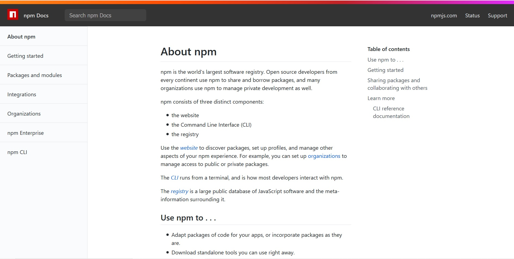
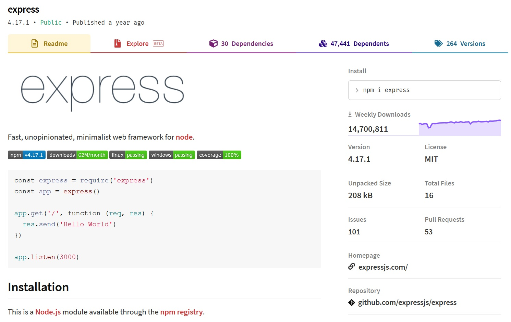
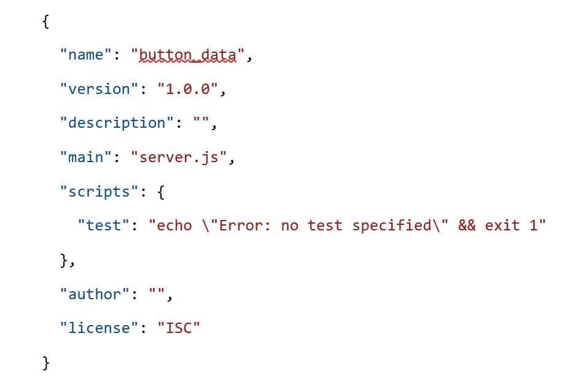
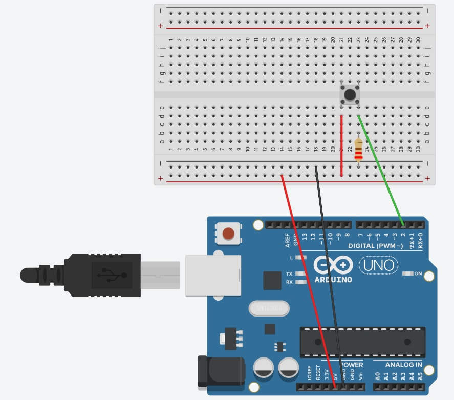

ARDUINO DATA ON A WEB PAGE
This week we will start looking at how to send data from an Arduino to a web page. You will be doing this by creating a Node.js application. This application will have code so you can use your computer as a local server, as well the code needed to get the data from the Arduino. You will be using visual studio code, Arduino, and Node.js to do this. You will also be referencing the port your Arduino is attached to bring in the data. I will go through getting started with Visual Studio code and setting up the folder and files for the Node.js server. Then I will go through the connection to the Arduino and how to transfer data from the Arduino, to the server, to a web page.
I’ll be walking through setting up with visual studio code, if you are using a different coding editor, it will be similar, but you may need to do some things differently.
Node.js is an open-source, cross-platform, back-end, JavaScript runtime environment that executes JavaScript code outside a web browser. Node.js lets developers use JavaScript to write command line tools and for server-side scripting—running scripts server-side to produce dynamic web page content before the page is sent to the user's web browser.
Wikipedia
Breaking this down:
with Node.js you can use JavaScript to code on the server, not just the browser
You can use it to update a web page dynamically. This means the page updates as soon as there is new data, not when the person refreshes their browser
It is a runtime environment not a JavaScript framework so,
It is not limited to creating web applications, you can do basic robotics, or program a drone
It is a runtime environment;
A RUNTIME ENVIRONMENT
A runtime environment is different from a JavaScript framework or library as it acts as a small operating system that provides all the functionality for a program to run.
It means that Node.js lets you create an environment to use JavaScript on the server
It has a way to translate the JavaScript to the machine language the computer hardware can understand
It uses event loops, which means it transmits data without constantly querying, this makes it faster
Today's Project
Today you will be creating a Node.js application that can import data from an Arduino and send it to a web page. In order to do this the application will use your computer as a local server, so you can use your computer to see the back and front end of the application.
You should have Node.js installed on your computer, and you could write the everything without other libraries, but that would get quite difficult. There are a number of libraries, called modules, that you can import into your application to make it easier. One of the frameworks you will use a lot with Node.js is Express. With Express you can create a server with a few lines of code, and also create the routes to web pages.
Node Package manager

You will be using Node Package Manager (npm) to install the packages for your application. Npm is the default package manager for Node.js and uses the command line interface to install packages. It is a repository for packages, anyone can make a package, and Express is available on npm. You will also be using npm to initialize your Node.js application.
Node Package manager

When you look up a package on the npm site for example Express https://www.npmjs.com/package/express it will give you information on how to install it, its features and some information on getting started.

I just want to say a few words about JSON files. They are used quite a lot with JavaScript and there is a package.json file created for Node.js application. The JSON file extension stands for JavaScript Object Notation. It is an open standard file and data exchange format, which means it can be used to input into an application. It uses text to store and transmit data objects consisting of attribute–value pairs and array data types, it uses key value pairs. In week one you saw the JavaScript object data type, the JSON format is similar to this. The package.json file for my application looks like this:
SETTING UP THE ARDUINO
- Arduino
- A Button component
- 220 Ohm resistor
- A Bread Board
- 4 Jump Wires
For this you will need an Arduino, a button component a 220-ohm resistor a bread board and 4 jump wires.

Connect the button to the Arduino, this diagram is in week 4 on the github.
 Create a new Arduino sketch and use the code button_serial.ino from week 4 github
Create a new Arduino sketch and use the code button_serial.ino from week 4 github